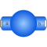
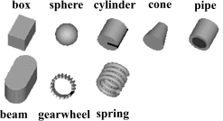

BodyShapeRigid body with mass, inertia tensor, different shapes for animation, and two frame connectors (12 potential states) |

|
Diagram
{kind=link}
Information
This information is part of the Modelica Standard Library maintained by the Modelica Association.
Rigid body with mass and inertia tensor and two frame connectors. All parameter vectors have to be resolved in frame_a. The inertia tensor has to be defined with respect to a coordinate system that is parallel to frame_a with the origin at the center of mass of the body. The coordinate system frame_b is always parallel to frame_a.
By default, this component is visualized by any shape that can be defined with Modelica.Mechanics.MultiBody.Visualizers.FixedShape. This shape is placed between frame_a and frame_b (default: length(shape) = Frames.length(r)). Additionally a sphere may be visualized that has its center at the center of mass. Note, that the animation may be switched off via parameter animation = false.

The following shapes can be defined via parameter shapeType, e.g., shapeType="cone":

A BodyShape component has potential states. For details of these states and of the "Advanced" menu parameters, see model MultiBody.Parts.Body.
Parameters (28)
| animation |
Value: true Type: Boolean Description: = true, if animation shall be enabled (show shape between frame_a and frame_b and optionally a sphere at the center of mass) |
|---|---|
| animateSphere |
Value: true Type: Boolean Description: = true, if mass shall be animated as sphere provided animation=true |
| r |
Value: Type: Position[3] (m) Description: Vector from frame_a to frame_b resolved in frame_a |
| r_CM |
Value: Type: Position[3] (m) Description: Vector from frame_a to center of mass, resolved in frame_a |
| m |
Value: Type: Mass (kg) Description: Mass of rigid body |
| I_11 |
Value: 0.001 Type: Inertia (kg·m²) Description: (1,1) element of inertia tensor |
| I_22 |
Value: 0.001 Type: Inertia (kg·m²) Description: (2,2) element of inertia tensor |
| I_33 |
Value: 0.001 Type: Inertia (kg·m²) Description: (3,3) element of inertia tensor |
| I_21 |
Value: 0 Type: Inertia (kg·m²) Description: (2,1) element of inertia tensor |
| I_31 |
Value: 0 Type: Inertia (kg·m²) Description: (3,1) element of inertia tensor |
| I_32 |
Value: 0 Type: Inertia (kg·m²) Description: (3,2) element of inertia tensor |
| angles_fixed |
Value: false Type: Boolean Description: = true, if angles_start are used as initial values, else as guess values |
| angles_start |
Value: {0, 0, 0} Type: Angle[3] (rad) Description: Initial values of angles to rotate frame_a around 'sequence_start' axes into frame_b |
| sequence_start |
Value: {1, 2, 3} Type: RotationSequence Description: Sequence of rotations to rotate frame_a into frame_b at initial time |
| w_0_fixed |
Value: false Type: Boolean Description: = true, if w_0_start are used as initial values, else as guess values |
| w_0_start |
Value: {0, 0, 0} Type: AngularVelocity[3] (rad/s) Description: Initial or guess values of angular velocity of frame_a resolved in world frame |
| z_0_fixed |
Value: false Type: Boolean Description: = true, if z_0_start are used as initial values, else as guess values |
| z_0_start |
Value: {0, 0, 0} Type: AngularAcceleration[3] (rad/s²) Description: Initial values of angular acceleration z_0 = der(w_0) |
| shapeType |
Value: "cylinder" Type: ShapeType Description: Type of shape |
| r_shape |
Value: {0, 0, 0} Type: Position[3] (m) Description: Vector from frame_a to shape origin, resolved in frame_a |
| lengthDirection |
Value: to_unit1(r - r_shape) Type: Axis Description: Vector in length direction of shape, resolved in frame_a |
| widthDirection |
Value: {0, 1, 0} Type: Axis Description: Vector in width direction of shape, resolved in frame_a |
| length |
Value: Modelica.Math.Vectors.length(r - r_shape) Type: Length (m) Description: Length of shape |
| width |
Value: length / world.defaultWidthFraction Type: Distance (m) Description: Width of shape |
| height |
Value: width Type: Distance (m) Description: Height of shape |
| extra |
Value: 0.0 Type: ShapeExtra Description: Additional parameter depending on shapeType (see docu of Visualizers.Advanced.Shape) |
| sphereDiameter |
Value: 2 * width Type: Diameter (m) Description: Diameter of sphere |
| sequence_angleStates |
Value: {1, 2, 3} Type: RotationSequence Description: Sequence of rotations to rotate world frame into frame_a around the 3 angles used as potential states |
Inputs (3)
| color |
Default Value: Modelica.Mechanics.MultiBody.Types.Defaults.BodyColor Type: Color Description: Color of shape |
|---|---|
| sphereColor |
Default Value: color Type: Color Description: Color of sphere of mass |
| specularCoefficient |
Default Value: world.defaultSpecularCoefficient Type: SpecularCoefficient Description: Reflection of ambient light (= 0: light is completely absorbed) |
Connectors (2)
Components (5)
| frameTranslation |
Type: FixedTranslation |
|
|---|---|---|
| body |
Type: Body |
|
| world |
Type: World |
|
| shape1 |
Type: Shape |
|
| shape2 |
Type: Shape |
Used in Examples (8)
|
Modelica.Mechanics.MultiBody.Examples.Elementary
Free flying body attached by two springs to environment |
|
|
Modelica.Mechanics.MultiBody.Examples.Elementary
Determine spring constant such that system is in steady state at given position |
|
|
Modelica.Mechanics.MultiBody.Examples.Rotational3DEffects
Demonstrates usage of models Rotor1D and Mounting1D |
|
|
Modelica.Mechanics.MultiBody.Examples.Rotational3DEffects
Demonstrates usage of model Rotor1D mounted on a moving body |
|
|
Modelica.Mechanics.MultiBody.Examples.Constraints
Body attached by one spring and two prismatic joints or constrained to environment |
|
|
Modelica.Mechanics.MultiBody.Examples.Constraints
Body attached by one spring and revolute joint or constrained to environment |
|
|
Modelica.Mechanics.MultiBody.Examples.Constraints
Body attached by one spring and spherical joint or constrained to environment |
|
|
Modelica.Mechanics.MultiBody.Examples.Constraints
Body attached by one spring and universal joint or constrained to environment |
Used in Components (3)
|
Modelica.Mechanics.MultiBody.Examples.Loops.Utilities
One cylinder with analytic handling of kinematic loop |
|
|
Modelica.Mechanics.MultiBody.Examples.Loops.Utilities
V6 engine with analytic loop handling |
|
|
Modelica.Mechanics.MultiBody.Examples.Systems.RobotR3.Components
Model of the mechanical part of the r3 robot (without animation) |